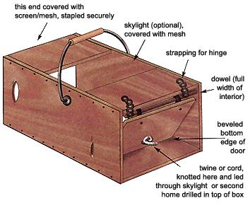
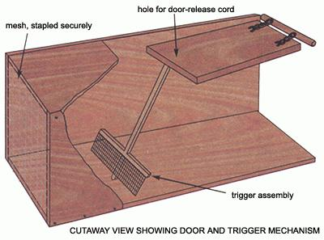

COUNTRY LORE
Make your own humane box trap.
I was recently faced with removing a family of squirrels who had set up winter housekeeping in my attic. Attempts to drive them off using the "ol' mothball trick" failed miserably. Mothballs allegedly possess some kind of squirrel-repellent properties. Possibly if fired at then from a shotgun-otherwise I can't agree.
The squirrels had to go. Commercial live-catch traps proved prohibitive, costwise, and I wasn't about to call in a pro. Snares and leg-hold traps are "messy," and I really saw no reason to kill our little guests. So I was left with designing and constructing the following live-catch trap on my own.
The trap consists of an open-ended box, one end covered with wire screen or mesh and the other having a flap-type door supported by a simple prop for the trigger. The door is the key to the entire project: it opens inward and is beveled on its bottom edge, so that when our furry friend knocks or brushes the prop aside, the door (possibly made from heavier material than the trap sides or even weighted for a quick 'n clean drop) closes and, try as he might, the animal can't pull the door inward to escape.
My trap is slightly bulkier and cruder than it needs to be, but it has undergone several modifications from its original, prototype form. With my first attempt, I made the trap too short and so the door would actually drop on the animal, allowing him to simply back out.
So far, I've only caught squirrels with my trap (and three wayward blue jays going for the sunflower seed bait), but I would presume that a raccoon may have the manual dexterity and cunning needed to work and worry the door open. I would suggest pretty close tolerances between door and trap sides.
The hinge is just some allpurpose, lightweight steel strapping (used for securing household pipes, etc.., and found in plumbing supply sections at most home stores) and an old wooden dowel.
My trap has a "skylight" in the top (I ran out of scrap ply during the aforementioned mentioned trap-lengthening, but had plenty of mesh left). This may have been an inadvertent masterstroke. as it brightens up the interior of the box and may, to a critter, look like an alternate escape route. I've also drilled a small hole through the bottom edge of the door and run a knotted piece of twine through this and through the skylight mesh, allowing me to stand back a bit and open the door with the twine, preventing a face full o' furious fur (or feathers ... a real godsend when releasing blue jays!).
The prop or trigger is any old thing light enough for the critter to knock aside and heavy enough to support the door. You can taper the end(s) and/or gouge a small indent in the floor of the trap and experiment a bit to get it just right. My original trigger was a T-bar design, its horizontal strip measuring almost the full width of the trap interior. But I found I'd attached this crosspiece a bit too high, allowing the squirrels to scoot underneath it. Stapling another piece of mesh to this soon rectified the problem.
My handle is from an old five-gallon metal pail. And the whole shebang is spray-painted with some old flat black I had lying around, mainly just to take the shine off the nail and screw heads, etc., though I dare say a few days outside will do the same job.
My working prototype is made largely out of 3/4" plywood and measures 31"x13"x13". It's on the large side for squirrels, but I'm anticipating the future relocation of a raccoon or two.
These dimensions can be adapted to suit materials at hand and the intended quarry. The accompanying illustrations (opposite page) should allow anyone with a scrap pile and a couple of hours to kill to construct a humane trap of their own. Happy catching!
Chris deVries
Ontario, Canada
|
 |
 |
|